Using On-Prem SRE¶
As a Researcher¶
Log into the SRE¶
Open browser and use the following SRE URL/domain
In the log in page, enter your UPI and password.
Enter MFA (authy token).
If you have multiple projects in SRE, you will be directed to the On-prem SRE landing page.
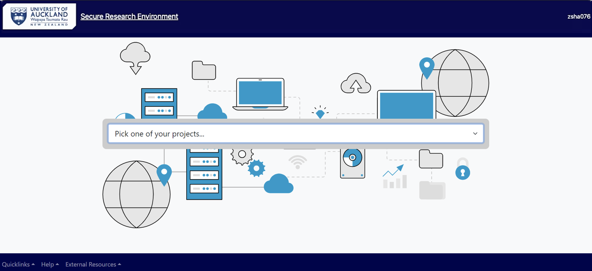
In the landing page, select your project from the drop-down menu.
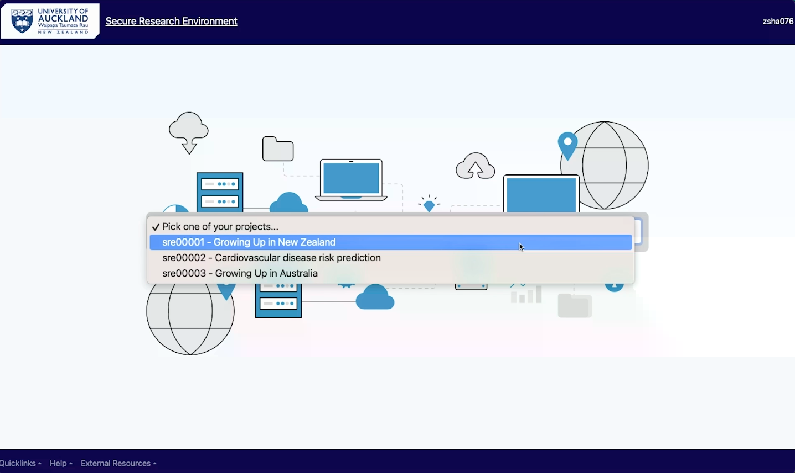
This will lead you to the SRE main menu (see the screenshot below). If you have only single project in SRE, upon logging in you will be directed to SRE main menu.
Analysing Data¶
From the project’s main menu, choose Virtual desktop if you need to access and work with the data in your personal folder or shared project folders.
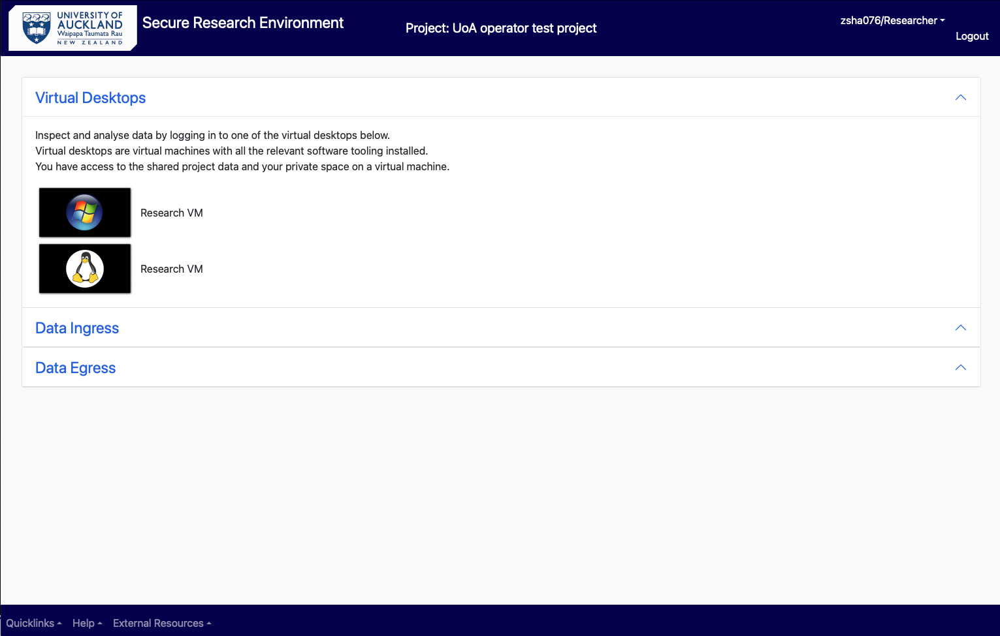
Choose from either the Windows Research VM or Linux Research VM. This will log you into the virtual machine which have the relevant software tools installed for your data analysis.
Click on the File Explorer from the task bar at the bottom of virtual desktop, to choose the folder you want. Select the folder which have the data you need to work with.
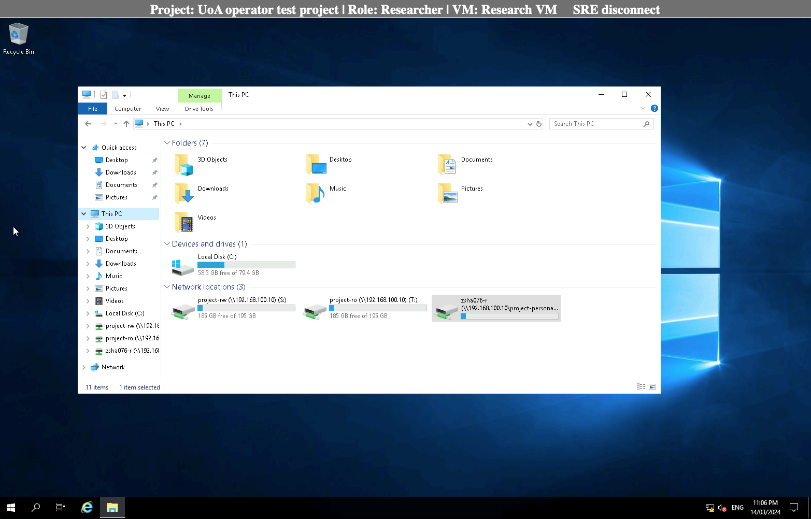
Opening software and running an analysis¶
Select your software from the desktop and open the datasets you need to work with from your personal or project’s shared folder. The files and folders can be accessed through clicking on “This PC” and choosing the appropriate folder under “Network locations”.
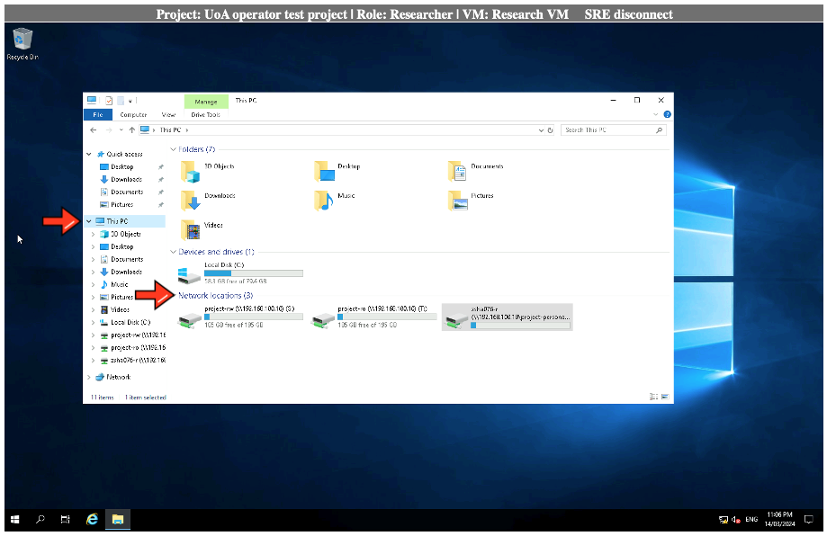
After finishing the analysis, “Save” your work in the appropriate folder (see the next section on “Save data”).
If your software is not available in the desktop, click on the Search icon in the task bar, type in and select the software you need.

Save data into different folders (personal, shared, egress)¶
Once the analysis is done, choose “project-rw” or your personal folder and press “Save” to store your data. If you want to egress your analysed data out of the SRE, follow instructions under Data Egress (link).

Note: In SRE, as a “Researcher” you cannot save a file in “project-ro” folder. Saving your files on VM’s “Desktop” and “Documents” folders is not recommended as the VMs are replaceable and the data you have saved there could be lost.
Access data from shared or read-only folder¶
The researchers can access the data in the Read-only folder and analyse it to generate outputs but cannot edit its content. Only the data custodian/s can edit the data in a project's RO folder.
Request Ingress/Import Data¶
As a researcher to upload files from your computer or a location outside of Secure Research Environment, you need to use “Data Ingress” Option from the project’s main menu.
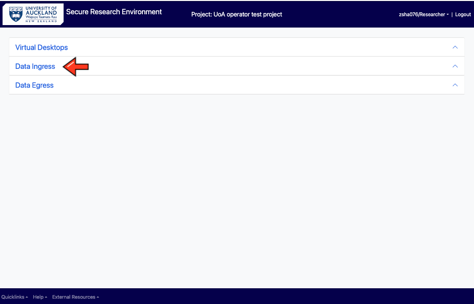
This feature allows your files to be copied into a staging area and a request can be made to ingress (import) the files into your personal folder in SRE. This is a two-step process.
(i) Choose the file and upload it into the staging area. Please note the maximum size is 1 GB per file but you can choose and upload multiple files at a go.
You can also zip up a file and upload it, but then the size of the zipped folder should be less than 1 GB.
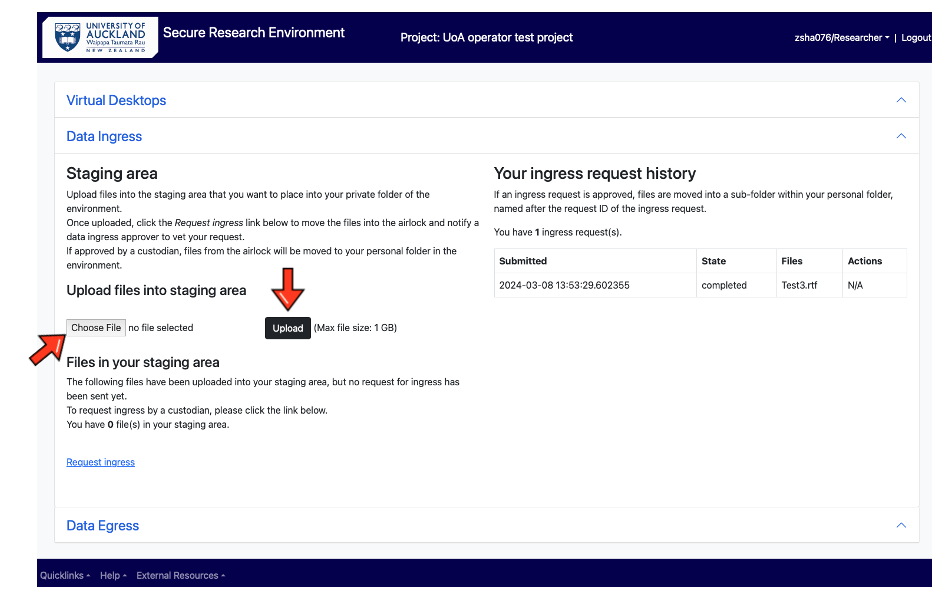
For ingressing larger files (more than 1 GB) please contact SRE IT team.
(ii) Click on the “Request ingress”. This moves the files into the airlock and a notification is sent to you and the ingress approver to evaluate your request.
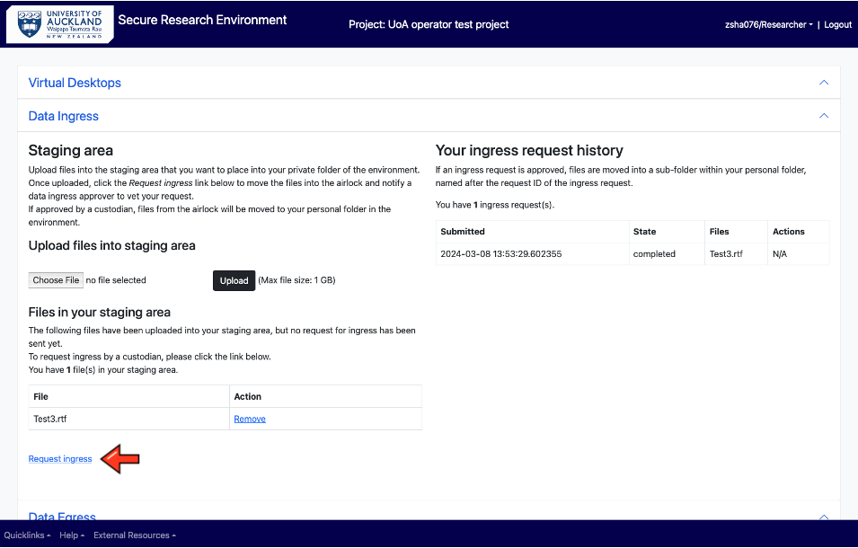
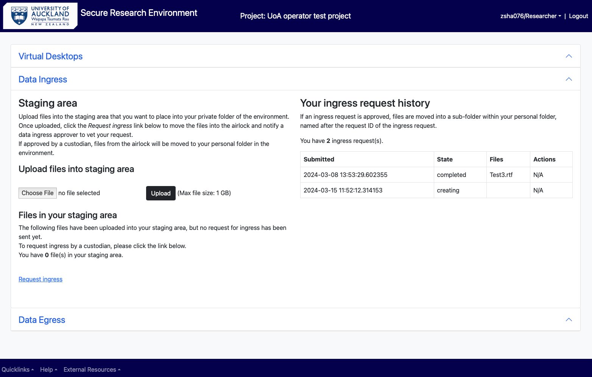
(In the ingress request history, you will see the request state changed from “creating” to “pending_approval”).
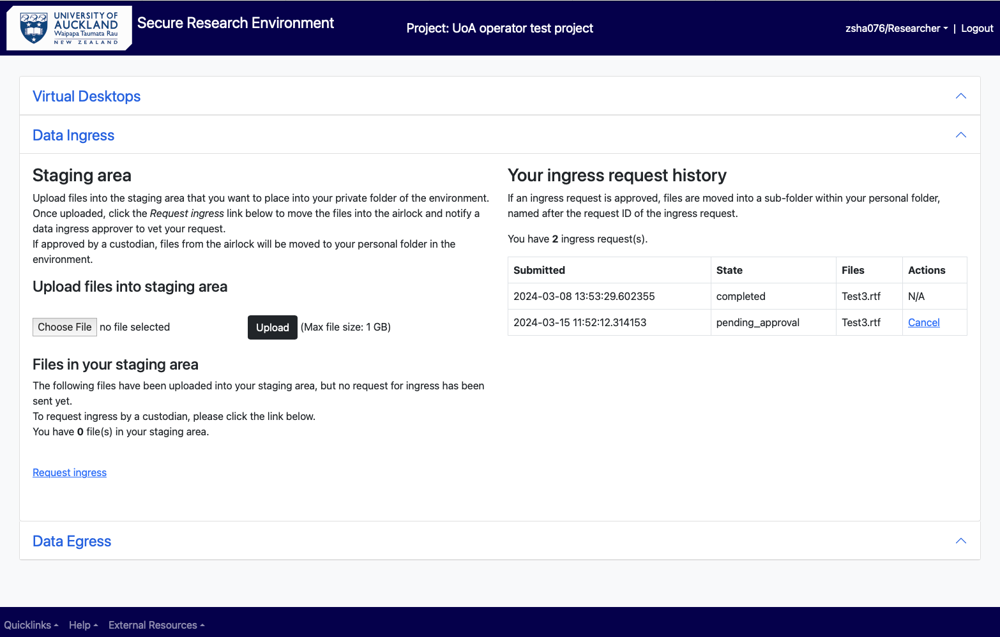
Following the ingress approver/data custodian’s evaluation of the data, if the request is approved, state of the request changes to “approved” and you will receive a notification of the same. The files will be moved from the airlock into “ingress” inside your personal folder.
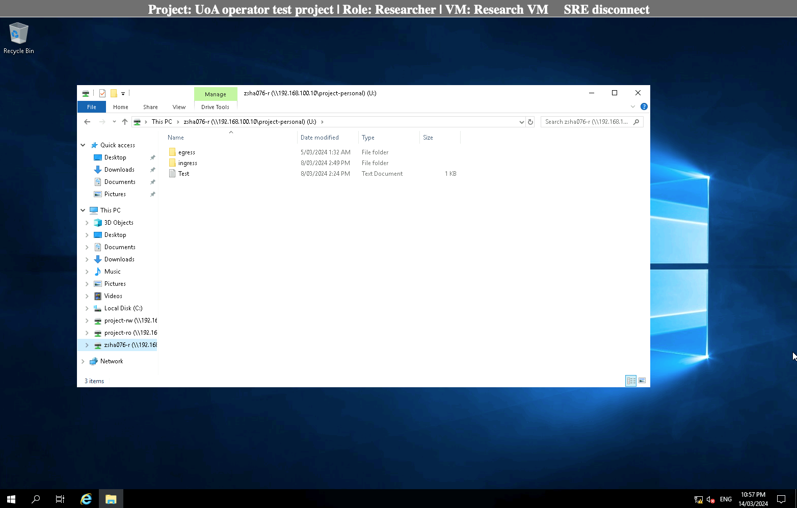
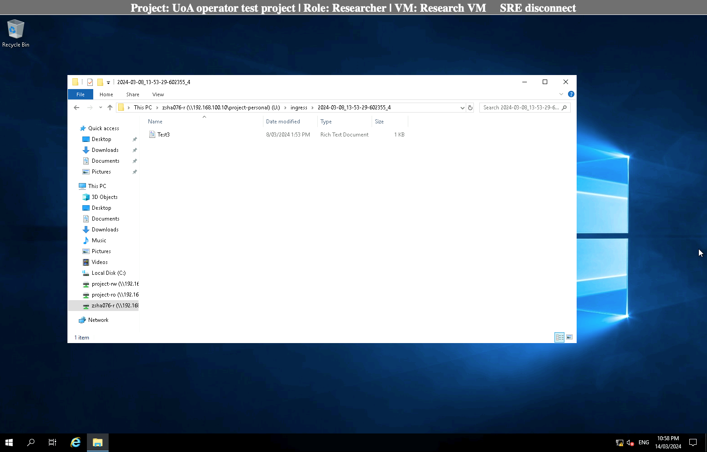
You can either keep the imported file in your personal folder or copy it into the “project-rw” folder to share and collaborate with rest of your team.
If the Ingress Approver rejects your request, state of the request changes to “rejected” and the file is deleted from the staging area. You can contact the Approver for a clarification and seek advice on the next steps.
Request Egress/Export Data¶
TBD
Time outs¶
The VM connection will be closed once the idle timeout has been reached. 15 minutes of inactivity will lead to connection to the VM being lost and you may need to log in again with your UPI, password and MFA to continue.
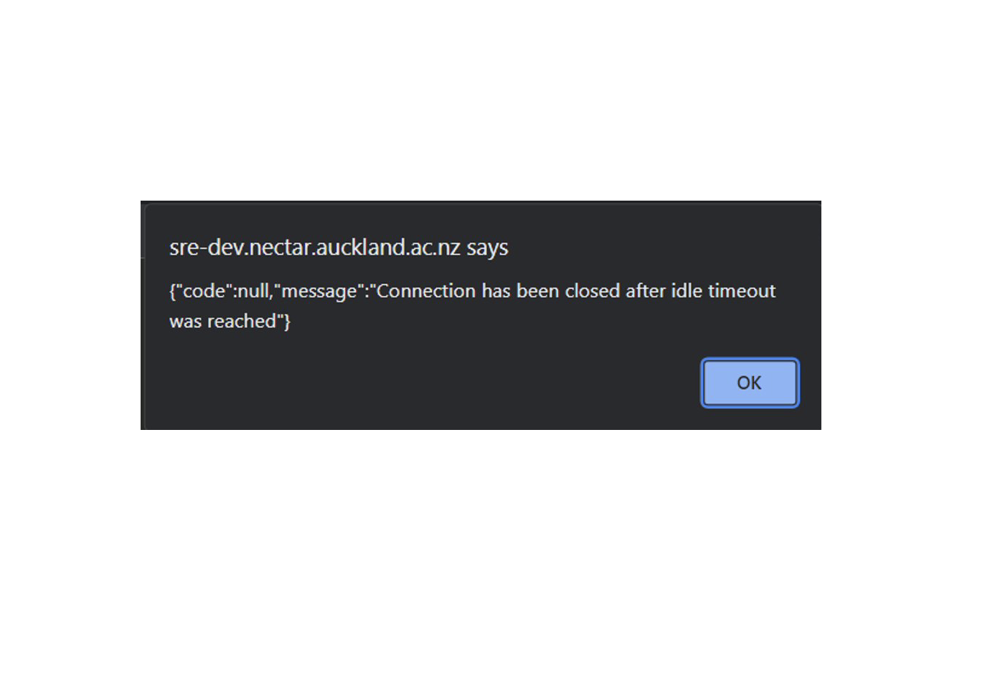
Please note after 24 hours, a session will be auto logged off. Please get in touch if you want longer uninterrupted sessions.
Changing role in SRE¶
You can readily change your role (if you have been given multiple roles by the SRE team at the discretion of data custodian) by selecting an option from the dropdown menu at the rightmost corner of the main menu.
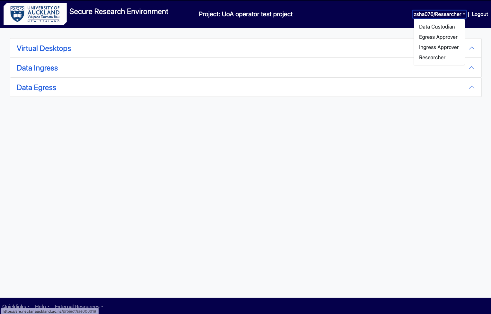
You can choose one of the four options according to your requirement in the project. Please contact your project owner/data custodian if you need to access SRE with a different role (only the project owner/data custodian can request SRE team to assign various roles to different users in SRE).
As a Data Custodian¶
Log into SRE¶
Open browser and use the SRE URL/domain
In the log in page, enter UPI, password and Authy token.
You will see the following landing page. Choose “Virtual Desktops” if you need to analyse your data. Follow the instructions as above for the Researcher.

In the Research VM, the following list of folders are available to a data custodian: Project-rw, Project-ro, Project-personal (of all users in the project), Custodian, Egress approver and Ingress approver
The Data Custodian have read-write access to all of the above folders.

Ingress data directly into SRE¶
A data custodian can import (ingress) data directly into SRE without requiring approval from the ingress approver.
For this, in the main menu select “Data Ingress” and “choose the file” to be uploaded and click on “Upload”. This copies your file from your computer/storage device to the airlock.

Select “Request ingress” to move the file from the airlock to “Custodian” folder. The request state in the “ingress request history” changes from “creating” to “completed”.
You will also receive two notifications in your email - your file has been uploaded and then that it has been processed.
Deletion of datasets¶
As a data custodian, you have read and write access to every folder in your project in an SRE. You may delete data from user’s personal, custodian, ingress-approver, egress-approver, project-ro and project-rw folders.
Request for change of user’s role/permission level¶
As a data custodian, you can request for a specific user’s role to be changed in your project or give them a different permission level (read-write or read-only) in SRE. For this, please send an email to the SRE team.
Request to remove a user from a project¶
As a data custodian, you can request for a specific user to be added or deleted from your project in SRE. Please send an email to the SRE team with the users' details – full name, UPI, email and role in SRE (researcher/data custodian/ingress-approver/egress-approver).
As a Data Ingress Approver¶
Login as in section () or change to “Ingress approver” role (section)
View ingress requests¶
Upon getting the notification to review an ingress files request, the user must either log in to SRE environment as an Ingress Approver/Data custodian or needs to select and change the role in SRE.
Select Data Ingress Request from the screen.
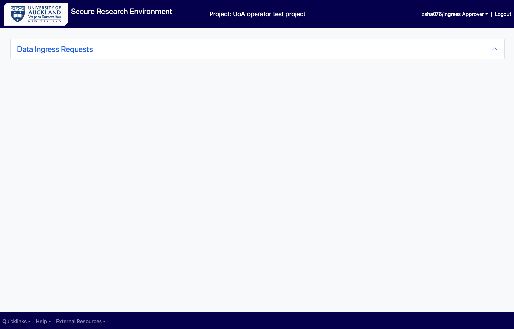
You can see the requests by different users which are waiting to be approved. You can use the virtual machine available to view and evaluate the data been requested to be brought in.
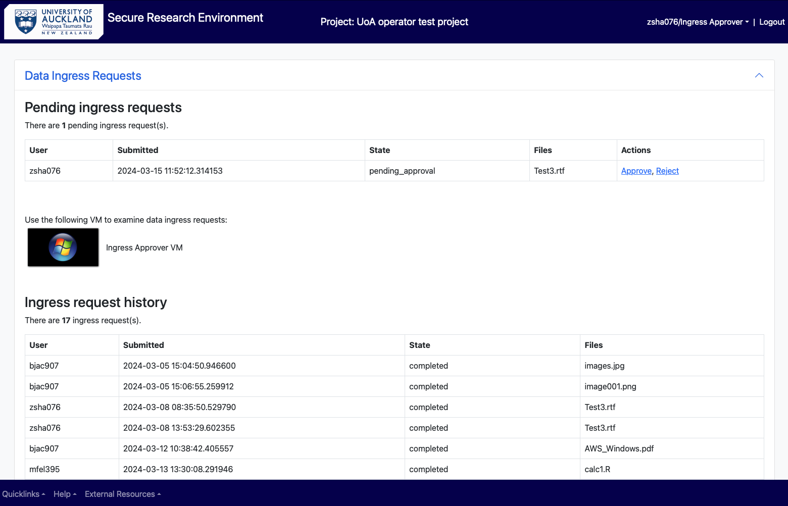
In the virtual machine, open the File explorer and select “ingress-approver” folder under network locations.
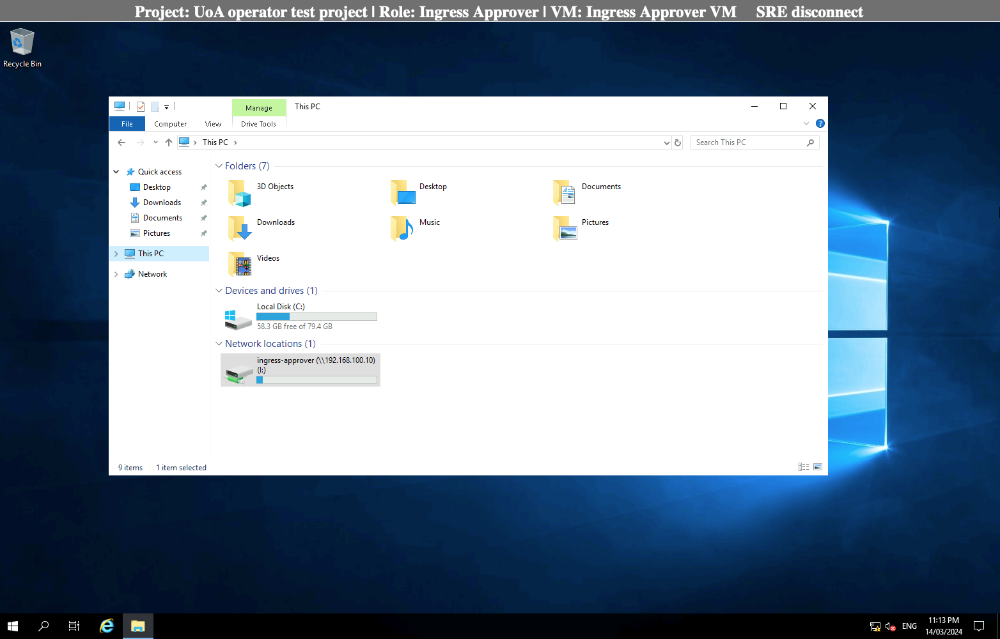
From the list of folders, select the user who requested the ingress, and open the requested file to inspect the contents.
Approve or decline a request¶
After inspection, go back to the previous main menu (Data ingress requests) and approve or reject the ingress request, as seen appropriate. The data will be automatically deleted from the ingress approver folder (airlock) following approval/rejection. If the request is approved, you will find the file in your personal storage (folder) in the “ingress” folder.
As a Data Egress Approver¶
View egress requests¶
TBD